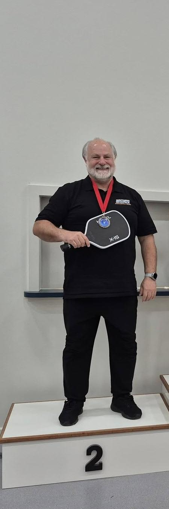
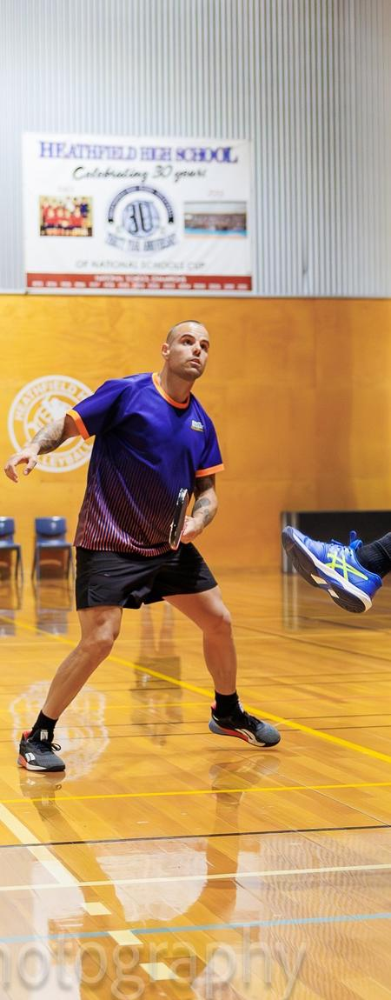

Elite group pickleball coaching, followed by a gentle and loving massage session to restore your body and soul.
Book a Session
Decades on the court, an encyclopedic mind for the game, and a patience that makes even beginners feel like champions. He is the foundation this whole program is built on. If pickleball has a wise elder, it is Ivan. He also specialises in helping people hit the ball into the net.

Maty brings the fire. With athletic precision and a competitive edge honed across multiple racket sports, he pushes every player to find another gear. Fast footwork, sharp angles, relentless drills. You will leave the court a better player every single time.
"Ivan taught me everything I know. The court is where it starts. The recovery is where the magic happens."
Small groups, big results. Ivan and Maty run structured sessions covering footwork, dinking, court positioning, and competitive strategy. All skill levels welcome.
After the court, you cool down in style. Hot tub, sauna, and cold plunge. Your body worked hard. Now give it the reset it deserves.
Ivan closes out every session with a gentle, restorative treatment. His warm, magical hands work through every knot with a care and tenderness that goes far beyond the physical. Loving, present, and deeply healing. Muscle soreness gone. Mind clear. Soul restored.
Join Ivan, Maty, and a crew who love the game as much as the recovery.
Get in Touch